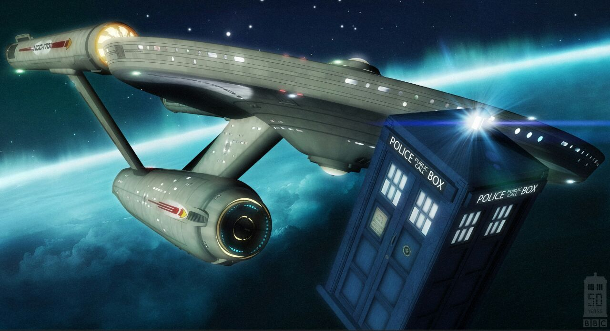

Doctor Who
Doctor Who follows the adventures of the title character, a rogue Time Lord with somewhat unknown origins who goes by the name "the Doctor". The Doctor fled Gallifrey, the planet of the Time Lords, in a stolen TARDIS ("Time and Relative Dimension(s) in Space"), a time machine that travels by materialising into, and dematerialising out of, the time vortex. The TARDIS has a vast interior but appears smaller on the outside, and is equipped with a "chameleon circuit" intended to make the machine take on the appearance of local objects as a disguise. Because of a malfunction, the Doctor's TARDIS remains fixed as a blue British police box
Episodes
Doctor Who originally ran for 26 seasons on BBC One, from 23 November 1963 until 6 December 1989. During the original run, each weekly episode formed part of a story (or "serial")—usually of four to six parts in earlier years and three to four in later years.Some notable exceptions were: The Daleks' Master Plan, which aired twelve episodes (plus an earlier one-episode teaser, "Mission to the Unknown", featuring none of the regular cast); almost an entire season of seven-episode serials (season 7); the ten-episode serial The War Games; and The Trial of a Time Lord, which ran for fourteen episodes (albeit divided into three production codes and four narrative segments) during season 23. Occasionally, serials were loosely connected by a story line, such as season 8 focusing on the Doctor battling a rogue Time Lord called the Master, season 16's quest for the Key to Time, season 18's journey through E-Space and the theme of entropy, and season 20's Black Guardian trilogy
Missing episodes
Between 1967 and 1978, large amounts of older material stored in the BBC's various video tape and film libraries was either destroyed or wiped. This included many early episodes of Doctor Who, those stories featuring the first two Doctors: William Hartnell and Patrick Troughton. In all, 97 of 253 episodes produced during the programme's first six years are not held in the BBC's archives (most notably seasons 3, 4, and 5, from which 79 episodes are missing). In 1972, almost all episodes then made were known to exist at the BBC, while by 1978 the practice of wiping tapes and destroying "spare" film copies had been brought to a stop.